BlowPli
Breathe. Aim. Play!
A three-tier maze toy for 3–5 year olds in Anganwadi centres. Blow or tap a coir ball through the layers with a bamboo straw, alone or together.
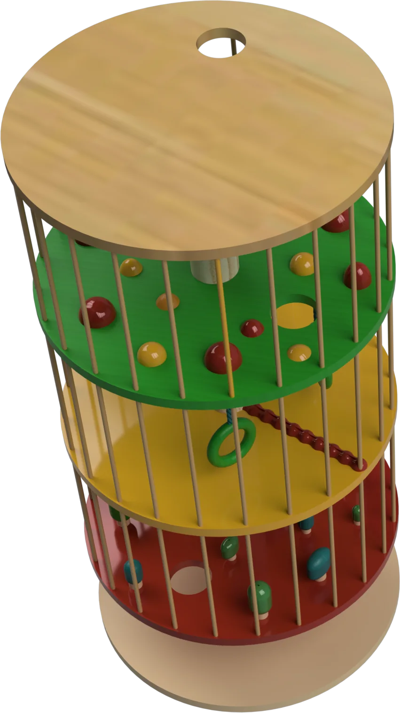
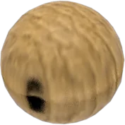
Low-tech play, big growth.
Design a playful, low-tech toy that encourages cognitive, physical and social development for 3–5 year old children in Anganwadi centres, in collaboration with Gulab Tribe.
- Ages 3–5
- Anganwadi centres
- Low-tech, low-cost
- 5 ideas shortlisted, 2 developed
What's missing from play?
We started with the frameworks behind early childhood education, then spent time in Anganwadi classrooms watching how children actually play.
🤝 Research done as a team · the toy was designed and built by me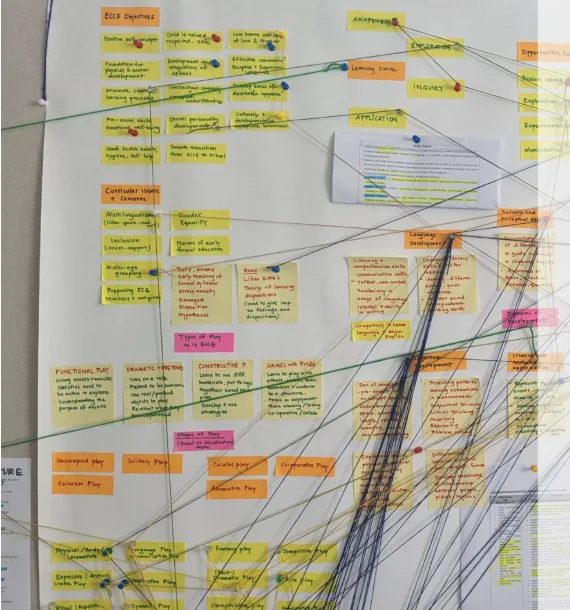
Frameworks, books & theories
Early Childhood Care and Education (ECCE), the National Education Policy and the National Curriculum Framework, plus play and developmental psychology for 3–5 year olds.
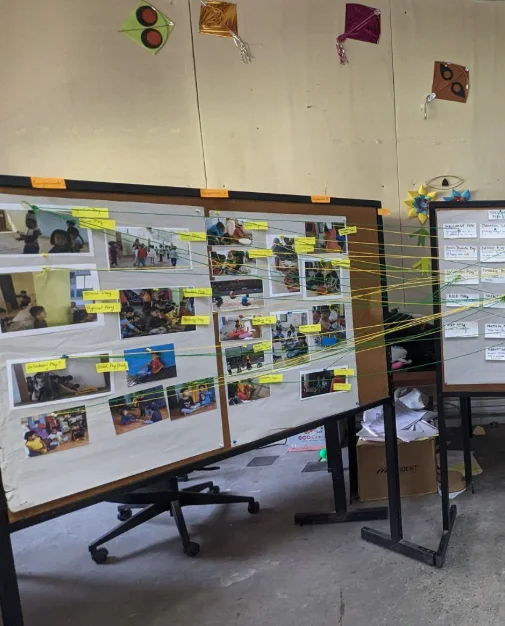
Observing & playing along
We observed children's play-based learning in Anganwadi classrooms, then brought in toys and played with them to see how play and learning connect.
Stages of play we observed
times seen during observation
Types of play we observed
times seen during observation
the gap ↓
Kids mostly played alone or side by side. Associative and co-operative play barely happened, and the objects they used as toys weren't designed for holistic development. When we brought toys in, restless energy turned into confident, explorative play.
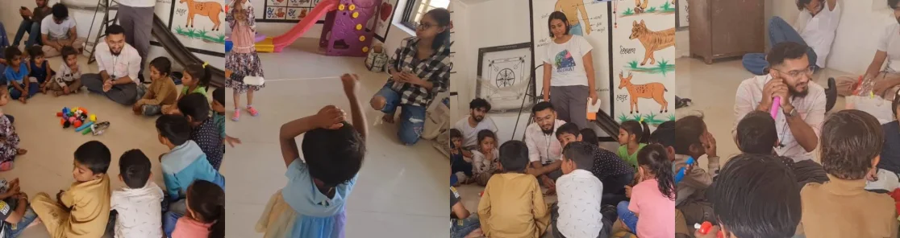
Play isn't just fun. It's foundation.
Children in Anganwadi settings often have limited access to structured, engaging play materials that nurture early growth. Play lays the groundwork for development across every domain, so one toy should feed all three.
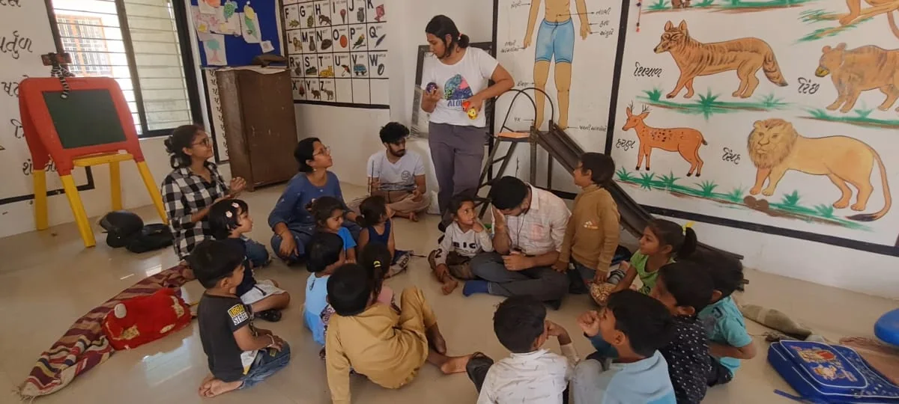
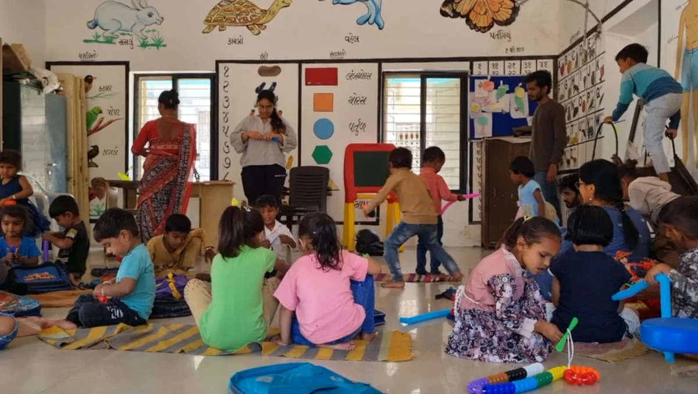
Cognitive
Focus & patience · problem-solving · cause & effect · decision making
Physical
Fine motor skills · hand-eye coordination · oral motor strength · controlled breathing
Social & emotional
Collaborative play · sense of achievement · emotional regulation · inclusive interaction
A maze you play with your breath.
BlowPli is a three-tiered maze made of stacked discs with unique cutouts. Drop a light coir ball in at the top, then guide it down through the layers to the hole at the bottom.
- blowthrough the hollow bamboo straw to push the ball along
- tapor strike the ball with the straw to nudge it
- togetherplay solo, or race and help each other
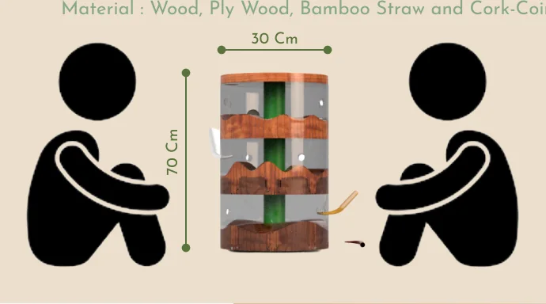
Three levels, three difficulties
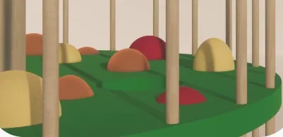
Level 1 · greenCurvy mountains
Gentle bumps to learn how hard to blow.
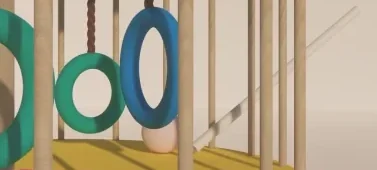
Level 2 · yellowNaughty swings & bumps
Hanging rings that knock the ball off course.
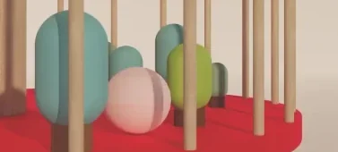
Level 3 · redDense tree line
Tight gaps that need careful aim.
One toy, a lot of ways to play.
Solitary
Navigate the maze alone, building focus and self-direction.
Social & co-operative
Group modes promote interaction, sharing and empathy.
fills the gap!Exploratory
Kids try different techniques and paths.
Surprise
Unpredictable ball paths trigger excitement and curiosity.
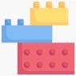
Object play
Using the straw and ball builds cause-and-effect learning.
Race to the bottom!
- Each player drops a ball in through the top hole.
- Blow or tap it down through mountains, swings and trees.
- First ball out of the bottom hole wins. Or work together to get them all out.
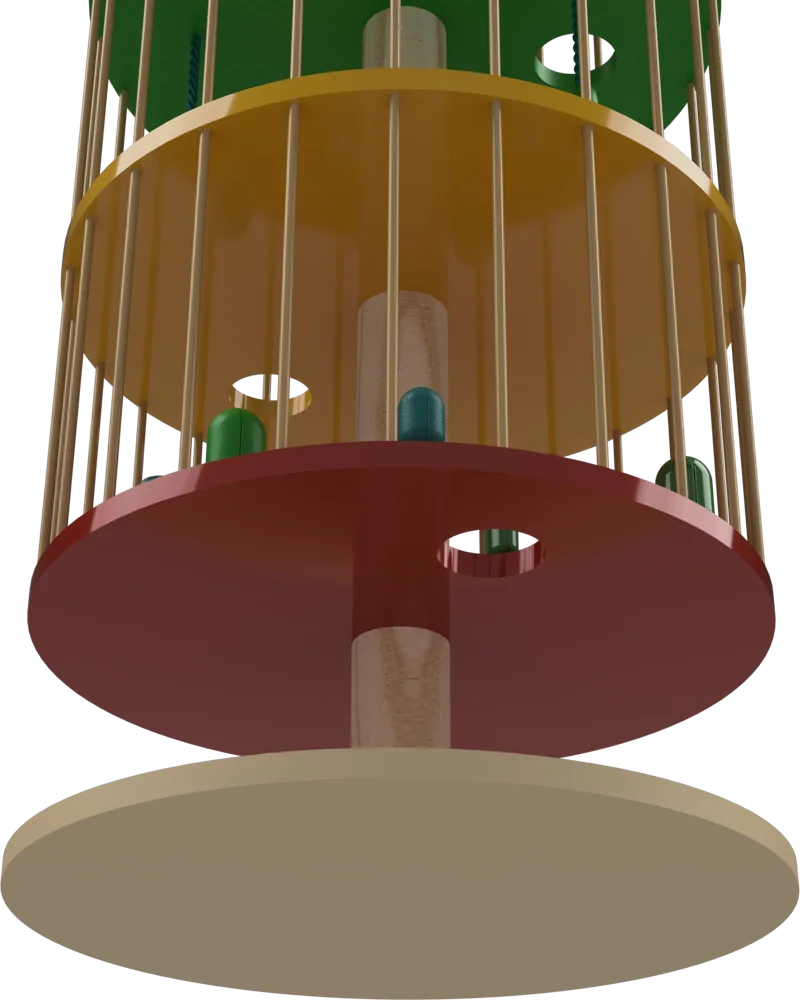
Where it started.
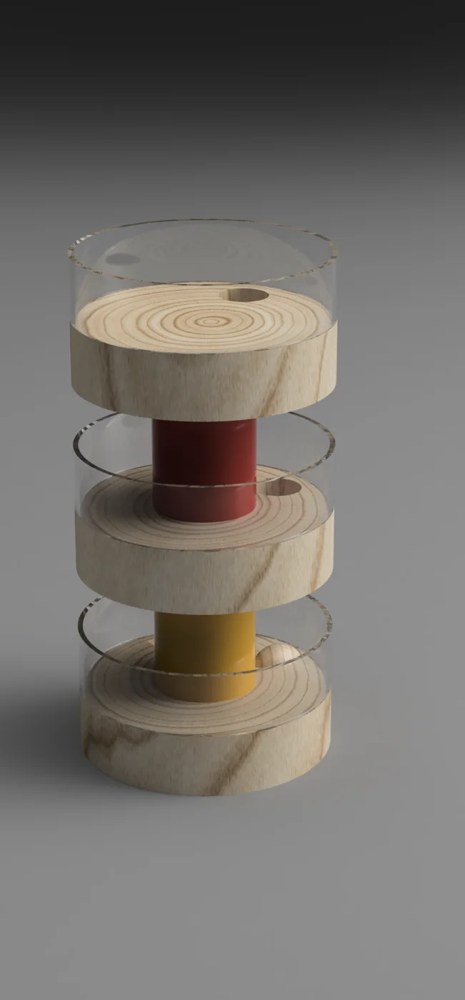
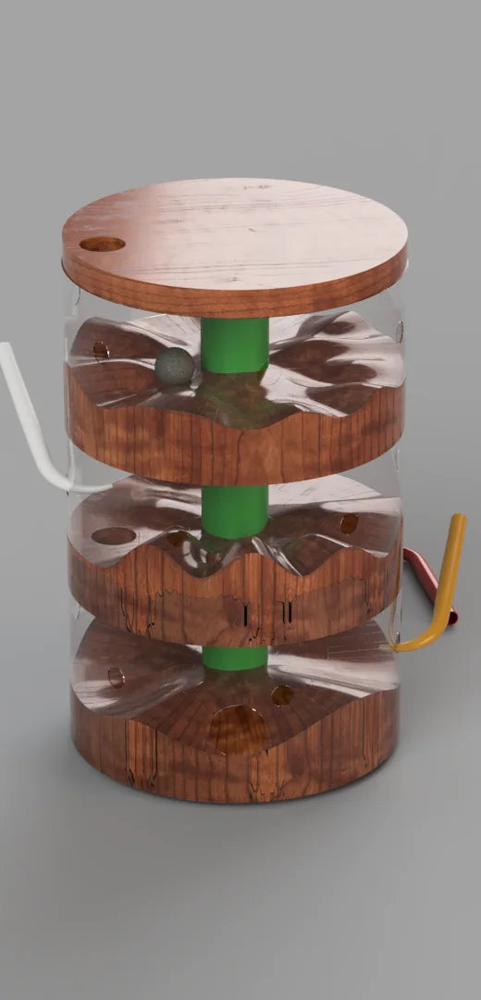
wood + acrylic
The first concepts used wood and clear acrylic so kids could watch the ball travel. Due to material and cost limits, these couldn't make it to the final prototype, so the walls became an open cage of wooden dowels instead.
Built by hand, in the workshop.
Every part of the final prototype was made by hand: stuffing the coir balls, turning the wooden parts on the lathe and sanding the discs smooth for small hands.
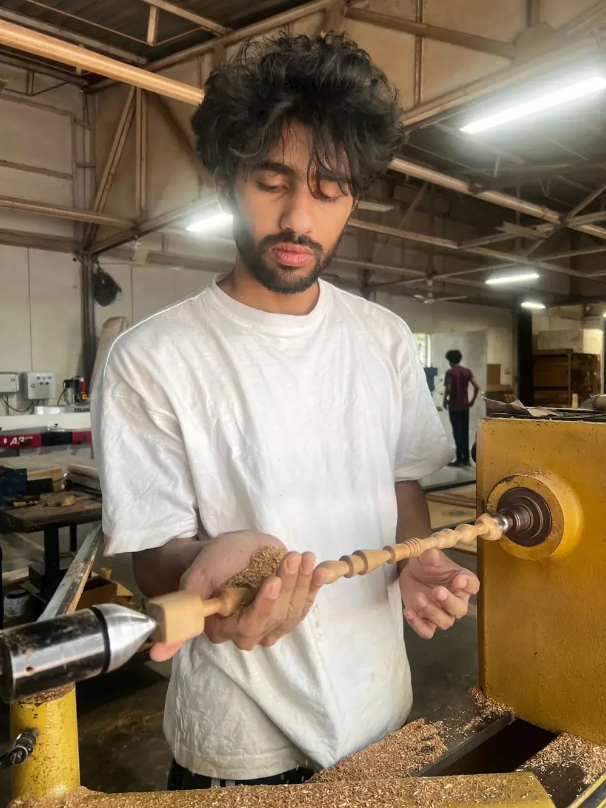
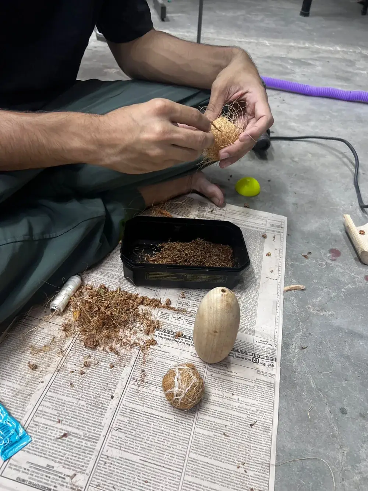
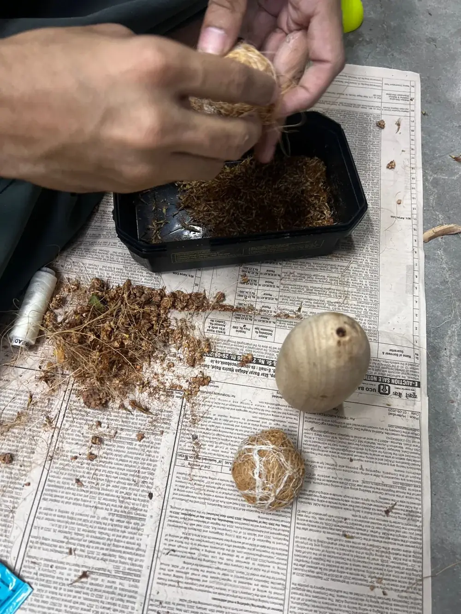
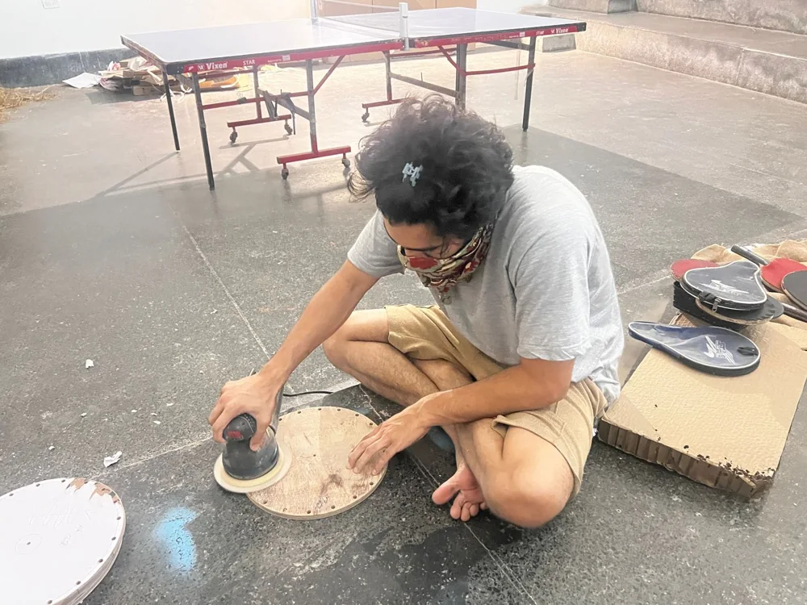
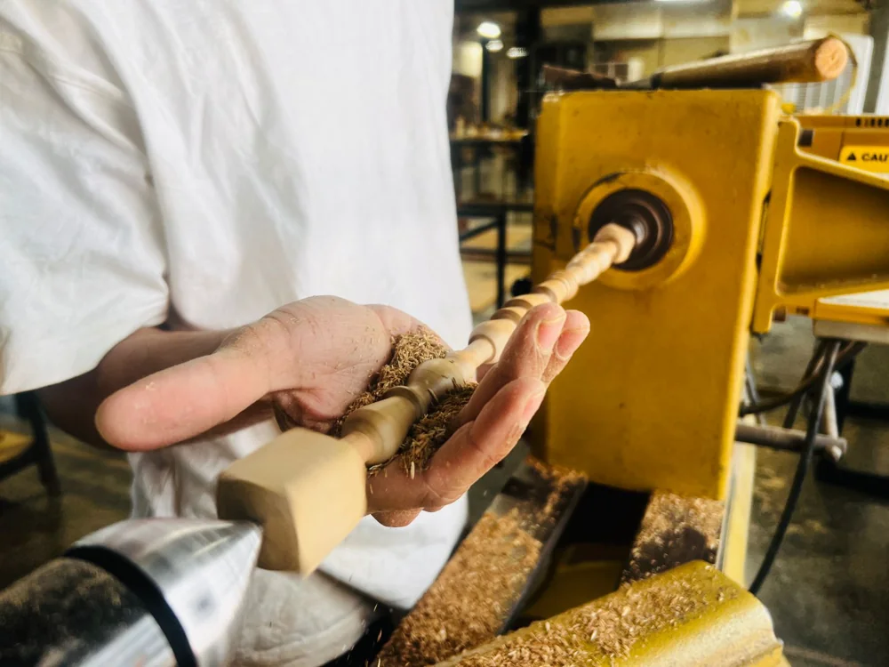
Built, and shown at Toy-Biz 2024.
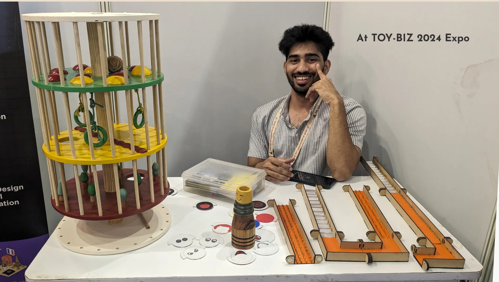
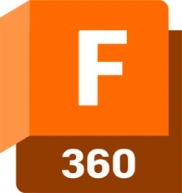
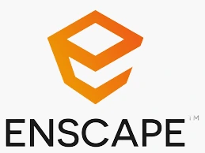
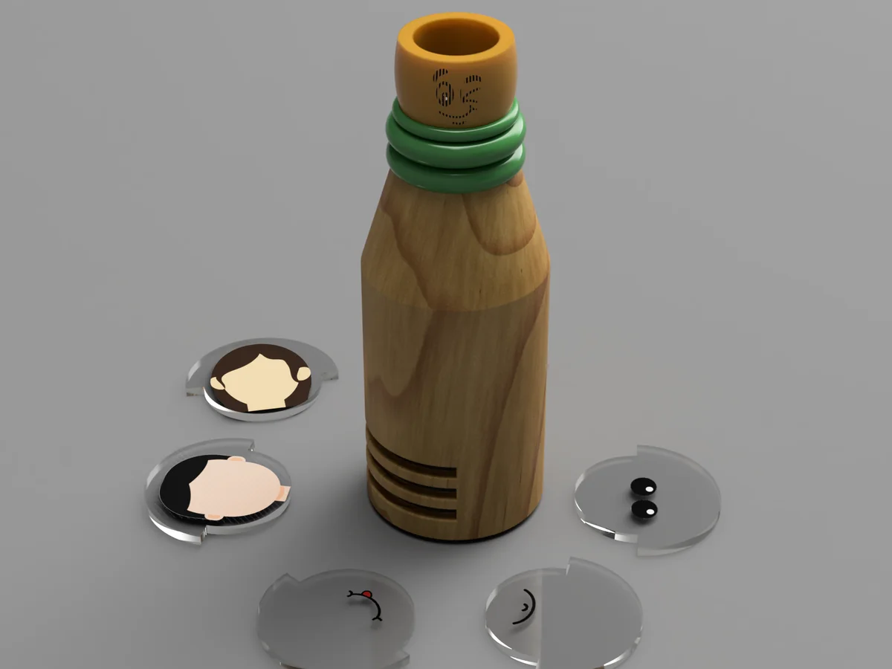
another toy I made in the same courseBinoMeA role-play toy that helps kids explore emotions through stacked face discs.